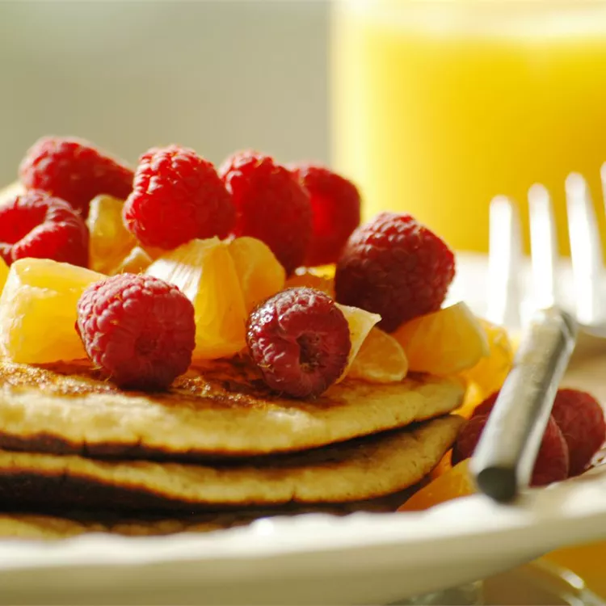

Dad's Double Whole Grain Pancakes

Description
A pancake is a flat cake made from a batter of eggs, milk and flour and fried on a very hot surface, often with butter. Pancakes can be thin or thick, crispy or fluffy depending on the recipe, and are served with a variety of toppings and sauces.
Ingredients
- 1 cup all-purpose flour
- 1 ⅓ cups dry milk powder
- 1 teaspoon baking powder
- 1 and a half teaspoons of baking powder
- 1 teaspoon salt
- 2 cups whole wheat flour
- 3/4 cup white sugar
4 eggs lightly beaten
- 3 cup white sugar
- 1/4 cup butter,melted
- 3 tablespoons vinegar
Steps
- In a large bowl, sift all-purpose flour, milk powder, baking powder, baking soda and salt. Stir in whole wheat flour. In a small bowl, combine sugar, eggs, water, butter and vinegar. Make a well in the flour mixture, and pour in the egg mixture. Mix until smooth.
- Heat a lightly oiled griddle or frying pan over medium heat. Pour or scoop the batter onto the griddle, using approximately 1/4 cup for each pancake. Cook until pancakes are golden brown on both sides; serve hot.